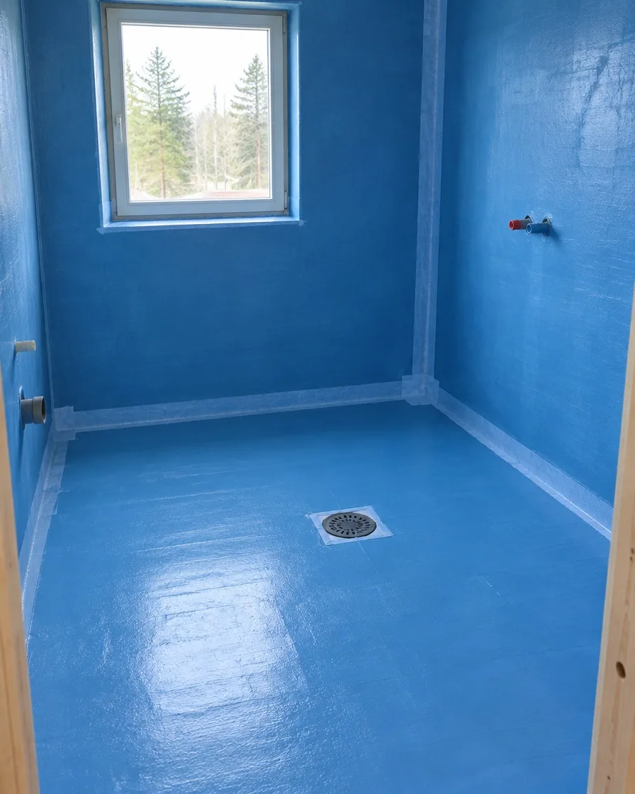
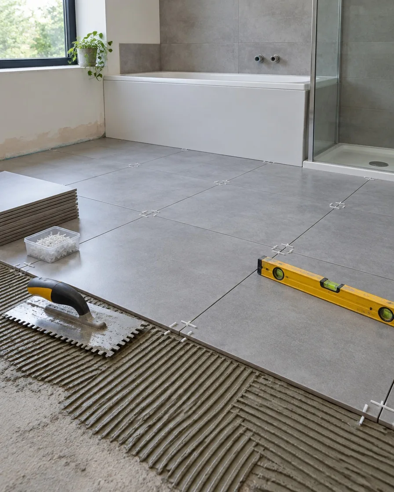
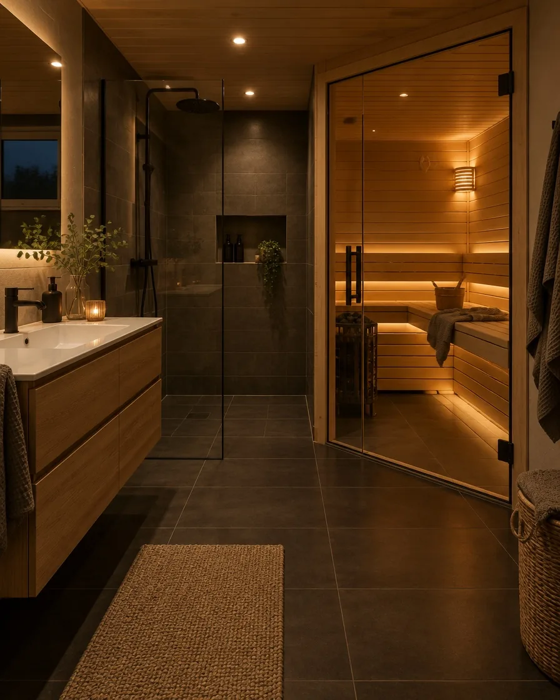
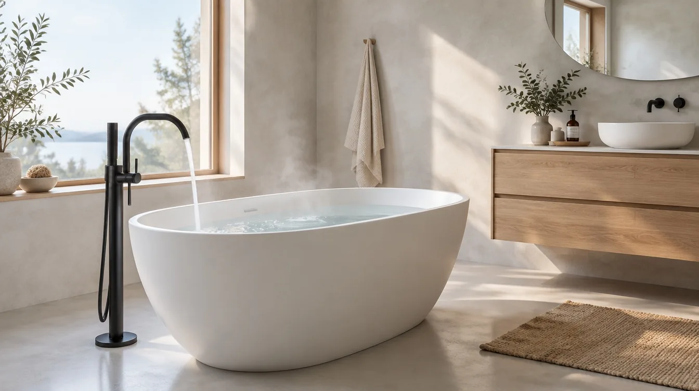
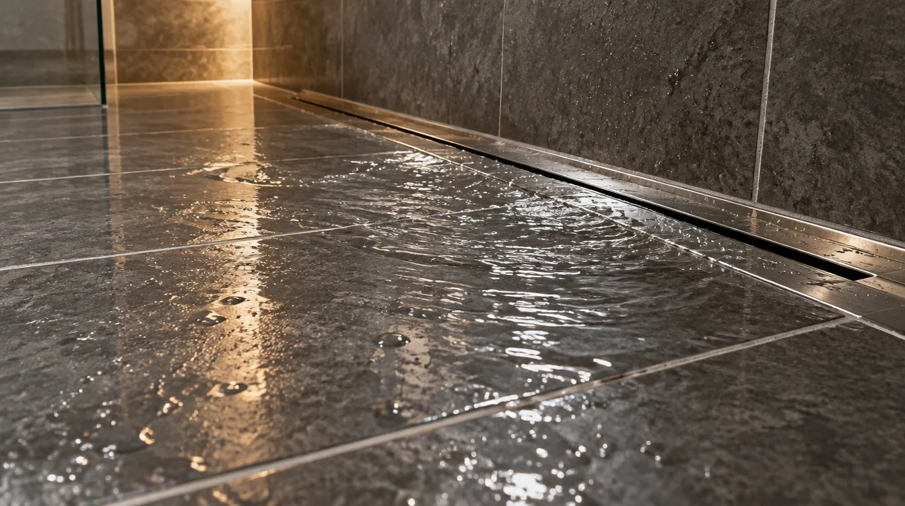

Kuvituskuvat. Esimerkki tyypillisestä kerrostalon kylpyhuoneremontista.
Näin kylpyhuone syntyy
Neljä vaihetta. Ei yllätyksiä.
01Purku ja kartoitus
Vanhat pinnat puretaan ja rakenteiden kosteus mitataan. Jos alta löytyy jotain odottamatonta, kerromme siitä heti ja sovimme jatkosta ennen kuin työ jatkuu.
02Vedeneristys
Seinät ja lattia käsitellään vedeneristeellä, nurkat ja läpiviennit vahvistetaan. Vaihe kuvataan, ja kuvat jäävät teille.
03Laatoitus
Laatat asennetaan suoriin linjoihin ja lattiaan mitattuihin kaatoihin. Saumat viimeistellään ja silikonit vedetään vasta kun kaikki on kuivaa.
04Kalusteet ja luovutus
Kalusteet, valaistus ja suihkuseinät paikoilleen. Käymme huoneen yhdessä läpi, ja saatte huolto- ja materiaalitiedot kansioon.
01



Vaihe 1Purku ja kartoitus
Kosteus etsii aina heikoimman kohdan.
Siksi emme oikaise vedeneristyksessä. Kaikki läpiviennit, nurkat ja kaivon liitokset tehdään huolella, koska ne jäävät laattojen alle näkymättömiin.
Pyyhi huurteinen lasi
Hintalaskuri
Mitä uusi kylpyhuone maksaa?
Säädä kokoa ja valintoja, niin näet suuntaa antavan hinnan, keston ja kotitalousvähennyksen. Tarkka hinta selviää maksuttomassa kartoituksessa.
Suuntaa antava hinta
0 €
sisältää työn ja materiaalit
Kesto0 vk
Kotitalousvähennys enintään0 €
Vähennystä hakee
Esimerkkilaskuri, ei sitova tarjous. Työn osuudeksi on oletettu noin puolet hinnasta. Kotitalousvähennys 2026: 40 % työn osuudesta, omavastuu 150 € ja enintään 2 100 € henkilöä kohden vuodessa (vero.fi, tilanne 2026).

Amme ja mikrosementtiOmakotitalo, EspooSauna ja pesuhuoneRivitalo, Vantaa

LineaarikaivoKerrostalo, Helsinki
Esimerkkikohteita
Tyypillisiä remontteja numeroina.
Kolme tavallista kohdetta, jotta saatte käsityksen kestosta ja laajuudesta. Jokainen kohde hinnoitellaan erikseen.
Kerrostalo4 m²
Pieni kylpyhuone
Purku, vedeneristys, laatoitus, suihkuseinä ja allaskaluste. Taloyhtiön kanssa sovittu aikataulu.
0viikkoa
Rivitalo7 m² + sauna
Pesuhuone ja sauna
Uusi saunan lauteet ja lasiseinä, lattialämmitys ja suurlaatat koko tilaan.
0viikkoa
Omakotitalo9 m²
Kylpyhuone ammeella
Vapaasti seisova amme, mikrosementtipinnat ja kaksi allasta. Kalusteet asiakkaan valitsemia.
0viikkoa
Esimerkit ovat havainnollistavia. Kaste on kuvitteellinen demoyritys.
Kysymykset
Usein kysyttyä.
Kauanko kylpyhuoneremontti kestää?
Tavallinen kerrostalon kylpyhuone valmistuu yleensä 3–5 viikossa. Kesto riippuu koosta, kuivumisajoista ja siitä, löytyykö purussa korjattavaa. Kerromme aikataulun kartoituksen jälkeen.
Voinko asua kotona remontin aikana?
Useimmiten kyllä. Suojaamme kulkureitit ja hoidamme pölynpoiston. Jos kodissa on vain yksi kylpyhuone, kannattaa sopia peseytymismahdollisuudesta etukäteen.
Saanko kotitalousvähennyksen?
Kotitalousvähennystä voi hakea remontin työn osuudesta, kun työ tehdään omaan tai vapaa-ajan asuntoon. Vuonna 2026 vähennys on 40 % työn osuudesta, omavastuu on 150 € ja enimmäismäärä 2 100 € henkilöä kohden. Merkitsemme työn osuuden laskuun.
Mitä taloyhtiölle pitää ilmoittaa?
Kerrostalossa ja rivitalossa kylpyhuoneremontista tehdään muutostyöilmoitus taloyhtiölle ennen töiden alkua. Autamme ilmoituksen liitteiden kanssa.
Paljonko kartoitus maksaa?
Kartoitus on maksuton. Käymme kohteen läpi, mittaamme tilan ja annamme kirjallisen tarjouksen.
Yhteys
Varataan kartoitus.
Kertokaa lyhyesti kohteesta, niin soitamme ja sovitaan käynti.